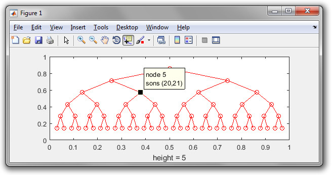
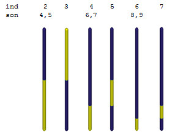

Cluster tree
Our H-matrix compression scheme follows Boerm et al., Engineering Analysis with Boundary Element 27, 405 (2003), and starts by setting up a cluster tree for the particle boundary. In general, the cluster tree remains hidden within the iterative BEM solver classes.
Contents
Initialization
For a given comparticle object p a cluster tree is generated through
% set up cluster tree for COMPARTICLE object P tree = clustertree( p ); % set up cluster tree for a user defined CLEAF value tree = clustertree( p, 'cleaf', 200 )
tree =
clustertree :
p: [1x1 comparticle]
son: [131x2 double]The cluster tree is generated using the following algorithm:
- Set cluster index ind=1 and assign all boundary elements to first cluster.
- If size of cluster ind is smaller than cleaf return, otherwise go to 3.
- Enclose cluster ind with bounding box and split bounding box along largest dimension through bisection. Boundary elements in the first half of the split box belong to the new cluster ind1, elements in the other half belong to cluster ind2.
- Assign sons(ind,:)=[ind1,ind2].
- Set cluster index to ind=ind1 and go to 2.
- Set cluster index to ind=ind2 and go to 2.
Methods
The cluster tree has several methods and properties
% sons of trees [ncluster,2] tree.son; % index range for clusters [ncluster,2] tree.cind % convert between particle and cluster indices ind1 = part2cluster( tree, reshape( 1 : p.n, [], 1 ) ); % convert between cluster and particle indices ind2 = cluster2part( tree, ind1 );
Examples
Consider a gold nanorod consisting of 7378 boundary elements.
% table of dielectric functions epstab = { epsconst( 1 ), epstable( 'gold.dat' ) }; % initialize nanorod p = trirod( 20, 800, [ 15, 15, 500 ] ); p = comparticle( epstab, { p }, [ 2, 1 ], 1, bemoptions ); % compute cluster tree tree = clustertree( p, 'cleaf', 200 );
The cluster tree produced through bisection can be plotted via
% plot cluster tree
plot( tree )

With the data cursor one can now explore the cluster index (node) together with the corresponding sons. Plotting the clusters can be done through
% plot clusters
plotcluster( tree )

Here cluster 1 has the sons 2 and 3, associated with the lower and upper part of the nanorod. The lower part (ind=2) is split into clusters 4 and 5, which, in turn, are further split through bisection. The splitting comes to an end when the number of boundary elements within a given cluster drops below the user-defined value of cleaf. In general, we recommend to set cleaf to a value between 100 and 400.
Copyright 2017 Ulrich Hohenester